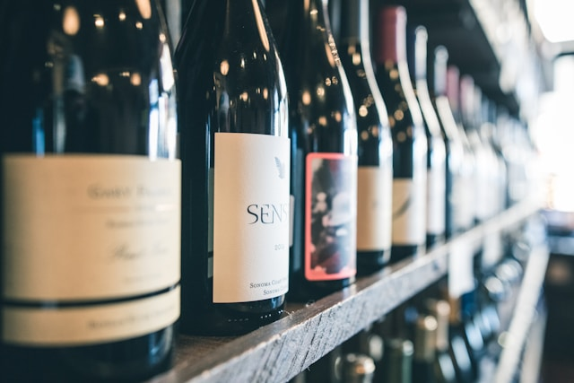

A Vinheria Agnello é uma loja de vinhos de São Paulo com mais de 15 anos de atuação, conhecida pelo atendimento especializado, no qual os vendedores orientam os clientes sobre tipos de uva, harmonização e escolha de vinhos. Durante a pandemia, o movimento da loja caiu devido às restrições, fazendo muitos clientes migrarem para compras online. Apesar de inicialmente resistir ao e-commerce por valorizar o contato próximo com o cliente, o proprietário decidiu investir em uma loja virtual com ajuda de sua filha, buscando reduzir os impactos negativos e manter a qualidade da experiência oferecida.
A Vinheria Agnello é uma empresa familiar administrada por Giulio e sua filha Bianca, com mais de 15 anos de atuação no mercado e apenas uma loja física. A equipe é pequena, com cerca de 6 funcionários divididos entre administração, estoque e vendas. A empresa já utiliza um sistema ERP para controle financeiro, compras, estoque e vendas, mas sempre resistiu à criação de uma loja virtual, pois valoriza muito o atendimento próximo e personalizado. Um dos seus maiores diferenciais é justamente o conhecimento dos proprietários e vendedores sobre vinhos. Eles utilizam esse conhecimento para orientar os clientes, oferecendo recomendações, explicações e dicas, funcionando quase como uma consultoria. Essa troca de informações é o que torna a experiência na loja única.
O mundo dos vinhos é extremamente amplo e complexo, o que dificulta a escolha para a maioria das pessoas. Existem cerca de 6.000 tipos de uvas no mundo, e cada uma pode apresentar características diferentes dependendo da região, clima, solo e processos de produção. Além disso, fatores como colheita, fermentação e armazenamento influenciam diretamente no sabor e na qualidade do vinho, podendo variar até de um ano para outro (safra). Por isso, é praticamente impossível conhecer todos os vinhos disponíveis. No entanto, por meio de estudo, experiências, degustações e troca de informações, é possível melhorar a capacidade de escolha e evitar erros. Ainda assim, a decisão final também depende da ocasião, do gosto pessoal e até da companhia.
Os vinhos são produtos sensíveis e podem sofrer alterações em suas características, como cor, aroma e sabor, caso não sejam armazenados corretamente. Fatores como exposição à luz, temperaturas elevadas e até vibrações podem prejudicar a qualidade da bebida. Por isso, a Vinheria Agnello adota cuidados especiais no armazenamento, principalmente com vinhos mais caros e raros. O objetivo é preservar ao máximo as características originais de cada garrafa, garantindo que o cliente receba o produto com a mesma qualidade de quando saiu da vinícola ou fornecedor.
A vinheria atende tanto clientes experientes quanto iniciantes, mas a maioria do público tem pouco conhecimento sobre vinhos e precisa de ajuda na hora da escolha. É comum que os clientes observem os rótulos, mas tenham dificuldades em entender as informações, o que gera dúvidas. Eles frequentemente questionam qual vinho escolher para diferentes situações, como almoços, jantares ou combinações com determinados pratos. Diante disso, o atendimento personalizado dos vendedores se torna essencial, pois ajuda o cliente a tomar decisões mais seguras. Esse suporte é um dos grandes diferenciais da vinheria e levanta um desafio importante: como reproduzir essa mesma experiência no ambiente online.